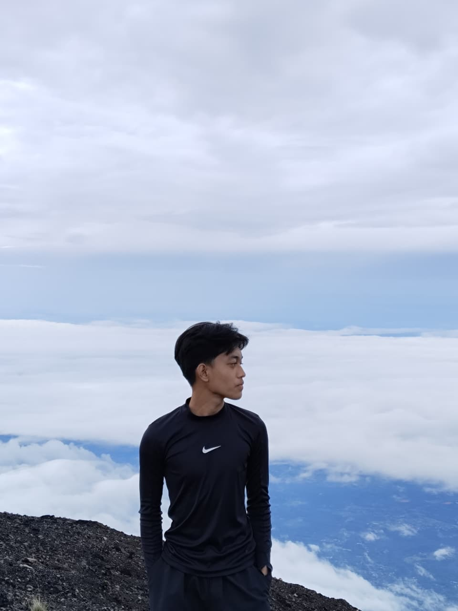

hallo semuanya
perkenalkan
saya
rizki zaidan maulana
mahasiswa fakultas teknik unsika 2025 prodi teknik lingkungan
HOBBY:train mountain
kenapa harus naik gunung?
karna naik gunung bukan hanya tentang mencapai puncak, tapi tentang perjalanan, rintangan, dan rasa syukur yang kita temukan di setiap langkah.
@ oleh zidan, menggunakan VSCode.